9 רציפות
הגדרת רציפות בנקודה ובקטע
פונקציות רציפות
פונקציה היא רציפה אם ניתן לשרטטה מבלי להרים את העט מהדף.
פונקציה \(f(x)\) היא רציפה ב- \(x_0\) , אם \(f\) מוגדרת בסביבה של \(x_0\) , ומתקיים
\[\lim_{x \to x_0} f(x) = f(x_0)\]
(אגף שמאל: הגבול של \(f\) ב-\(x_0\) ; אגף ימין: הערך של \(f\) ב-\(x_0\))
תרשים: פונקציה רציפה בקטע פתוח \((a,b)\)
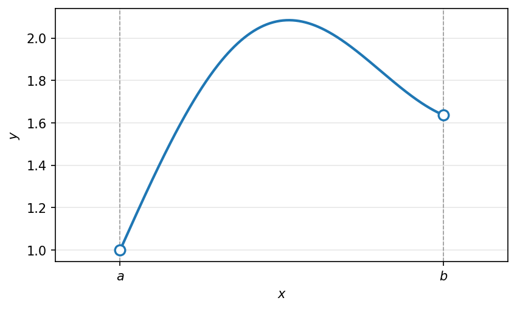
פונקציה \(f(x)\) היא רציפה ב- \((a,b)\) , אם לכל \(x_0 \in (a, b)\) הפונקציה \(f\) רציפה ב- \(x_0\) .
תרשים: פונקציה לינארית יורדת רציפה בקטע סגור \([a,b]\) עם נקודה \(x_0\)
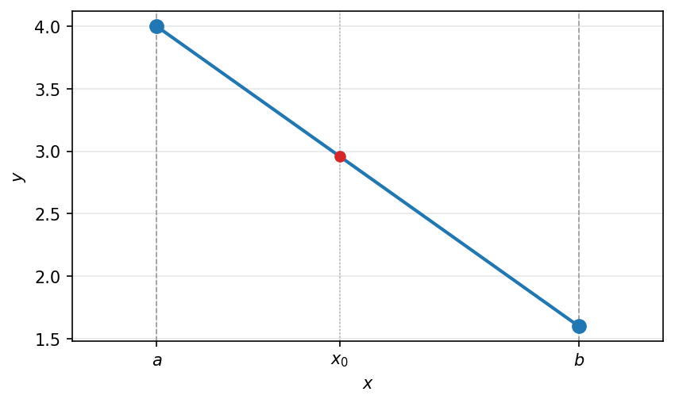
פונקציה \(f(x)\) היא רציפה ב- \([a,b]\) , אם לכל \(a < x_0 < b\) הפונקציה \(f\) רציפה ב- \(x_0\) וגם
\[\lim_{x \to a^+} f(x) = f(a) \quad , \quad \lim_{x \to b^-} f(x) = f(b)\]
דוגמא
תרשים: אי-רציפות ב-\(x=2\) — \(\lim_{x\to 2}f(x)=3\) אך \(f(2)=4\)
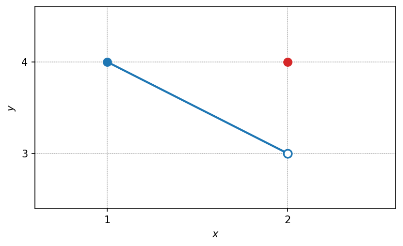
\[\lim_{x \to 2} f(x) = 3\]
\[f(2) = 4\]
הפונקציה רציפה ב- \((1,2)\) וב- \([1,2)\)
הפונקציה לא רציפה ב- \([1,2]\)
דוגמאות:
- האם הפונקציה \(f(x) = \frac{\sin(x)}{x}\) רציפה ב-0?
לא, כי היא לא מוגדרת ב-0. ת.ה: \(R \setminus \{0\}\)
- האם הפונקציה רציפה ב-0?
\[g(x) = \begin{cases} \frac{\sin(x)}{x} & x \neq 0 \\ 5 & x = 0 \end{cases}\]
\(g\) מוגדרת ב-0: \(g(0) = 5\)
גבול הפונקציה:
\[\lim_{x \to 0} g(x) = \lim_{x \to 0} \frac{\sin(x)}{x} = 1\]
(נבול מופלא)
ולכן \(g\) אינה רציפה, כי \(1 = \lim_{x \to 0} g(x) \neq g(0) = 5\)
- האם הפונקציה רציפה ב-0?
\[h(x) = \begin{cases} \frac{\sin(x)}{x} & x \neq 0 \\ 1 & x = 0 \end{cases}\]
הפונקציה רציפה ב-0, כי \(\lim_{x \to 0} h(x) = 1 = h(0)\) \(\longleftarrow\) \(\lim_{x \to 0} \sin(x) = \sin(x_0)\)
כלומר, \(\sin(x)\) רציפה ב- \(x_0\) לכל \(x_0 \in R\) .
דוגמה: פונקציה מפוצלת עם גבולות מופלאים ופרמטר
דוגמא נוספת
עבור אילו ערכים של \(A, B \in R\) הפונקציה הבאה רציפה בנקודות \(0\):
\[f(x) = \begin{cases} \dfrac{A \cdot \sin(2x)}{x} & x > 0 \\[2mm] B & x = 0 \\[2mm] 2 + \dfrac{\ln(x^2 + 1)}{x} & x < 0 \end{cases}\]
- נחשב את הגבולות החד צדדיים ב-\(0\):
\[\lim\limits_{x \to 0^+} f(x) = \lim\limits_{x \to 0^+} A \cdot \frac{\sin(2x)}{x} = \lim\limits_{x \to 0} A \cdot 2 \cdot \frac{\sin(2x)}{2x} = A \cdot 2 \cdot 1 = 2A\]
ארתמטיקה של גבול בהנחה שהגבול האמצעי קיים: \(\lim\limits_{t \to 0} \dfrac{\sin(t)}{t} = 1\)
- בדומה:
\[\lim\limits_{x \to 0^-} f(x) = \lim\limits_{x \to 0} - \left(2 + \frac{\ln(x^2 + 1)}{x}\right) = \lim\limits_{x \to 0} \left(2 + \frac{x \cdot \ln(1 + x^2)}{x^2}\right) = 2 + 1 \cdot 0 = 2\]
עפ”י ארתמטיקה גם פה (בהנחה שקיים): \(\lim\limits_{t \to 0} \dfrac{\ln(1 + t)}{t} = 1\)
- לכן \(f\) רציפה ב-\(0\) אם ורק אם
\[\lim\limits_{x \to 0^+} f(x) = \lim\limits_{x \to 0^-} f(x) = f(0)\]
\[2A \qquad\qquad 2 \qquad\qquad B\]
כלומר: \(A = 1\) , \(B = 2\)
הערה (מהמקור): שלושת הביטויים \(2A\), \(2\), \(B\) נכתבו במקור מתחת לשלושת איברי השוויון \(\lim\limits_{x \to 0^+} f(x) = \lim\limits_{x \to 0^-} f(x) = f(0)\) בהתאמה, כדי להמחיש את תנאי הרציפות \(2A = 2 = B\).
⭐ טעות נפוצה של “חצי אריתמטיקה”: החלפת הפונקציה בגבול שלה
\[1 \overset{?}{=} \lim\limits_{x \to 0} \frac{\sin(x)}{x} \neq \lim\limits_{x \to 0} \frac{0}{x} = 0\]
דוגמה: פונקציית דיריכלה
פונקציית דיריכלה
\[D(x) = \begin{cases} 1 & x \in Q \\ 0 & x \notin Q \end{cases}\]
תרשים: גרף פונקציית דיריכלה, שתי שורות נקודות בגובה \(1\) (רציונליים) ובגובה \(0\) (אי רציונליים)
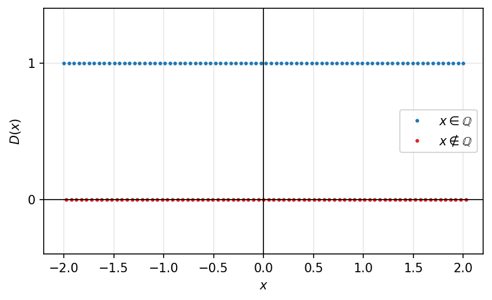
נראה כי \(\lim\limits_{x \to x_0} D(x)\) לא רציפה באף נקודה.
לכל \(x_0 \in R\) קיימת סדרה \((a_n)_{n=1}^{\infty}\) בה כולם רציונליים: \(a_n \in Q\) , \(\quad a_n \to x_0\) אז \(D(a_n) = 1 \xrightarrow[n \to \infty]{} 1\)
מצד שני, קיימת סדרה \(b_n \notin Q\) : \(\quad b_n \to x_0\) אז \(D(b_n) = 0 \xrightarrow[n \to \infty]{} 0\)
לכן לפי היינה \(\lim\limits_{n \to \infty} D(x)\) לא קיים.
דוגמה: פונקציית הערך השלם
דוגמאות מיוחדות
פונקציית הערך השלם \(f(x) = \lfloor x \rfloor\) רציפה בכל נקודה \(x_0\), עבור \(x_0 \notin \mathbb{Z}\).
תרשים: גרף פונקציית הערך השלם \(f(x) = \lfloor x \rfloor\) עם נקודות מלאות וריקות בערכים השלמים
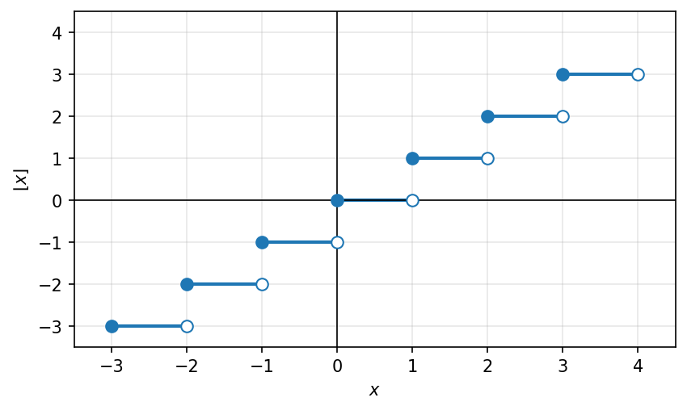
בכל נקודה \(x_0 \notin \mathbb{Z}\) לא רציפה, כי לא קיים \(\lim\limits_{x \to x_0} \lfloor x \rfloor\) אבל היא כן רציפה מימין בכל נקודה כזו \(x_0\).
רציפה ב- \((1,2)\) וגם ב- \([1,2)\).
לא רציפה ב- \([1,2]\).
אריתמטיקה של פונקציות רציפות
אריתמטיקה של פונקציות רציפות
חיבור, חיסור, כפל, חילוק, הרכבה והופכית של פונקציות רציפות יצא פונקציה רציפה.
\[f(x) + g(x) \quad \text{רציפה ב-} x_0 : \lim\limits_{x \to \infty} (f(x) + g(x)) = f(x_0) + g(x_0)\]
הערה (מהמקור): במקור סומן מתחת ל-\(f(x)\) ומתחת ל-\(g(x)\) (בנפרד) הכיתוב “רציפה ב-\(x_0\)”, כדי להדגיש שכל אחת מהפונקציות רציפה בנקודה \(x_0\).
תרשים: פונקציה רציפה גלית על \([a,b]\) המקבלת כל ערך ביניים \(y\) שבין \(f(a)\) ל-\(f(b)\)
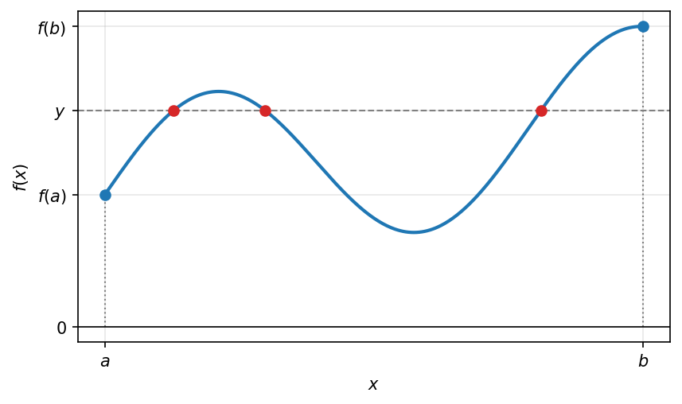
משפט ערך הביניים
אם פונקציה \(f(x)\) רציפה ב-\([a,b]\), אז לכל מספר \(y\) שנמצא בין \(f(a)\) ל-\(f(b)\), קיימת \(c \in (a, b)\)
לדוגמא:
הפונקציה \(f(x) = x^3 - 5x - 2\) בקטע \([0,3]\) היא רציפה (אלמנטרית).
משפט ערך הביניים: \(f(3) > 0\) , \(f(0) < 0\) אז קיימת \(c \in (0, 3)\) עבורה
\[c^3 - 5c - 2 = f(c) = 0\]
תרשים: הפונקציה \(f(x)=x^3-5x-2\) על \([0,3]\) החותכת את ציר ה-\(x\) בנקודה \(c\), עם \(f(0)=-2\) ו-\(f(3)=10\)
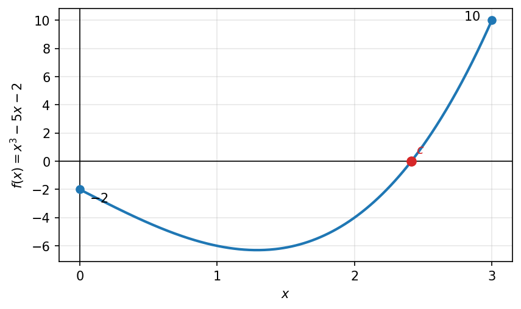
חיבור, חיסור, כפל, חילוק, הרכבה והופכית של פונקציות רציפות יצא פונקציה רציפה.
\(f(x) + g(x)\) רציפה ב-\(x_0\): \[\lim_{x \to \infty} (f(x) + g(x)) = f(x_0) + g(x_0)\]
תרשים: פונקציה רציפה בעלת התנהגות גלית בין \(a\) ל-\(b\)
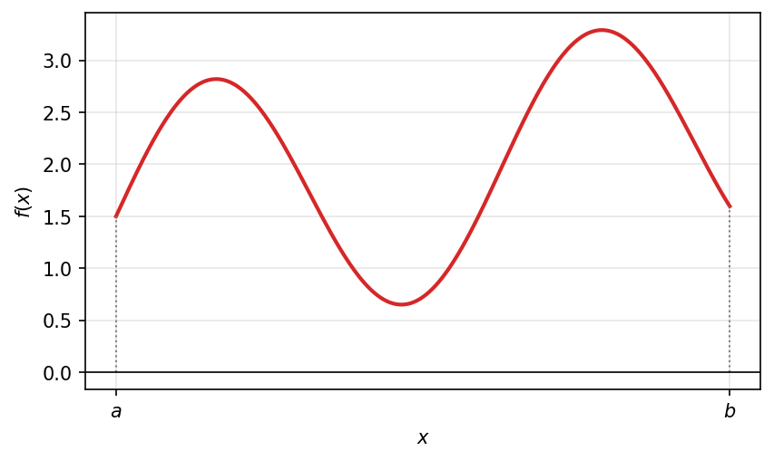
פונקציות אלמנטריות
פונקציה אלמנטרית
פונקציה אלמנטרית היא פונקציה שמתקבלת מהרכבה של פונקציות בסיסיות בעזרת פעולות: חיבור, חיסור, כפל, חילוק והרכבה.
כאשר הפונקציות הבסיסיות הן:
- פולינומים \(p(x)\)
- פונקציות רציונליות \(r(x)\)
- חזקה \(x^a\) (\(x > 0\))
- שורש \(\sqrt{x}\) (\(x \geq 0\))
- אקספוננט \(a^x\) (\(a > 0\))
- לוג \(\log(x)\)
- סינוס \(\sin(x)\)
- קוסינוס \(\cos(x)\)
- טנגנס \(\tan(x)\)
- פונקציות טריגונומטריות הפוכות \(\arcsin(x), \arccos(x), \arctan(x)\)
כל פונקציה אלמנטרית היא פונקציה רציפה, בכל נקודה בתחום הגדרתה.
משפט ערך הביניים
אם פונקציה \(f(x)\) רציפה ב-\([a,b]\), אז לכל מספר \(y\) שנמצא בין \(f(a)\) ל-\(f(b)\), קיימת \(c \in (a,b)\).
לדוגמא:
הפונקציה \(f(x) = x^3 - 5x - 2\) בקטע \([0,3]\) היא רציפה (אלמנטרית).
ממשפט ערך הביניים: \(f(0) < 0\) , \(f(3) > 0\) אז קיימת \(c \in (0,3)\)
עבורה \(c^3 - 5c - 2 = f(c) = 0\)
תרשים: גרף עולה של \(f(x)=x^3-5x-2\) החותך את ציר ה-\(x\) בנקודה \(c\), מ-\(f(0)=-2\) עד \(f(3)=10\)
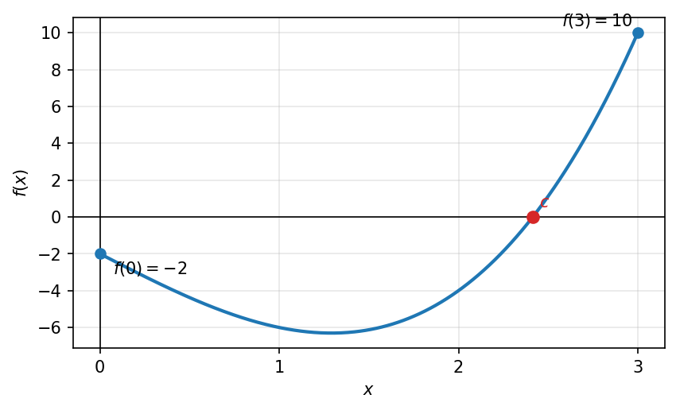
דוגמה: חוסר רציפות בנקודה אחת הורס את המסקנה
תוכן בהכנה — להשלמה.
דוגמה: קיום פתרון של משוואה
דוגמאות לשימושים בערך הביניים
1) נתונות שתי פונקציות \(f,g\) רציפות בקטע \([0,1]\) ונתון כי \(f(0) < g(0)\) , \(f(1) > g(1)\). הראו כי קיימת נקודה \(0 < c < 1\) עבורה \(f(c) = g(c)\).
פתרון:
נגדיר פונקציה חדשה \(h(x) = f(x) - g(x)\)
מהנתונים נסיק: \(h(1) = f(1) - g(1) > 0\) , \(h(0) = f(0) - g(0) < 0\)
בנוסף, \(h(x)\) הפונקציה רציפה ב-\([0,1]\), כי היא חיסור של פונקציות רציפות ב-\([0,1]\).
לכן, ממשפט ערך הביניים נסיק שקיימת \(0 < c < 1\) עבורה
\(h(c) = 0 \quad \leftarrow \quad f(c) - g(c) = 0\)
\[f(c) = g(c)\]
תרשים: שתי דוגמאות לעקומות \(f\) ו-\(g\) על \([0,1]\) הנחתכות בנקודה \(c\) (כאשר \(f(0)<g(0)\) ו-\(f(1)>g(1)\))
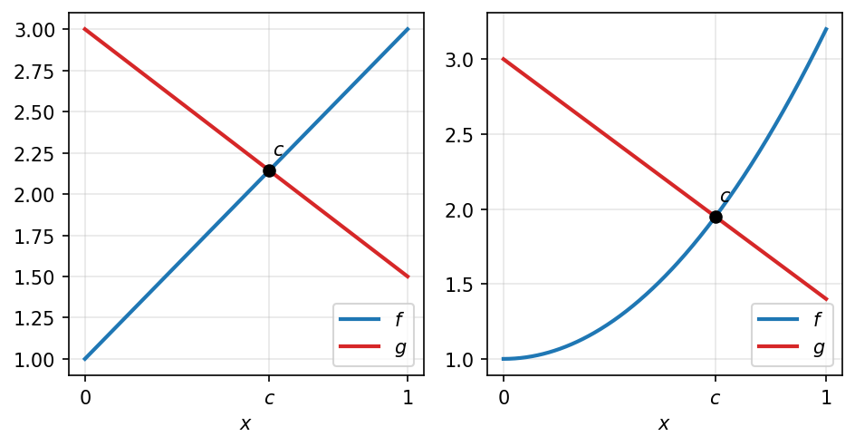
2) אם \(f(x)\) פונקציה רציפה ב-\(\mathbb{R}\) (כלומר בכל נקודה ב-\(\mathbb{R}\)), ונתון כי: \[f(0) = -2 \quad , \quad \lim_{x \to -\infty} f(x) = 4 \quad , \quad \lim_{x \to \infty} f(x) = 5\]
הראו כי הפונקציה מתאפסת ב-2 נקודות שונות לפחות.
פתרון:
נשתמש בהגדרה של \(\lim_{x \to \infty} f(x) = 5\):
החל מ-\(x_0\) מתקיים \(4.99 < f(x) < 5.01\)
ניקח \(x_0 < x_1\) ובו \(0 < 4.99 < f(x_1)\)
ואז ממשפט ערך הביניים בין \(0\) ל-\(x_1\): \(f(x_1) > 0\) , \(f(0) = -2\)
קיימת \(c\): \(f(c) = 0\)
תרשים: פונקציה רציפה השואפת ל-\(5\) עם אסימפטוטה אופקית מקווקוות, החוצה את ציר ה-\(x\), עם סימון \(x_0\)
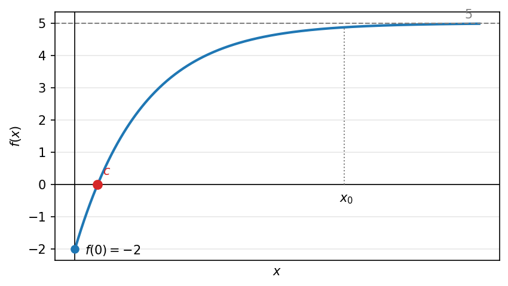
דוגמה: קיום מספר פתרונות של משוואה
ראו את הדוגמאות למשפט ערך הביניים לעיל (קיום פתרון). להשלמת המקרה של מספר פתרונות.
משפט ויירשטראס
אם \(f(x)\) רציפה, ב-\([a,b]\), אז היא חסומה ב-\([a,b]\) ומקבלת בו מינימום ומקסימום.
קיימות \(x_{min}, x_{max} \in [a,b]\) כך שמתקיים \(f(x_{min}) \leq f(x) \leq f(x_{max})\) לכל \(x \in [a,b]\)
דוגמאות לגרפים:
תרשים: שלוש דוגמאות למשפט ויירשטראס. (A) פונקציה רציפה אך לא חסומה על הקטע הפתוח ליד \(b\) — אי אפשר ליישם את המשפט. (B) פונקציה רציפה על \([a,b]\) עם מקסימום פנימי ומינימום בקצוות. (C) פונקציה רציפה עם כמה נקודות \(x_{\max}\) ו-\(x_{\min}\) — אפשר ליישם את המשפט.
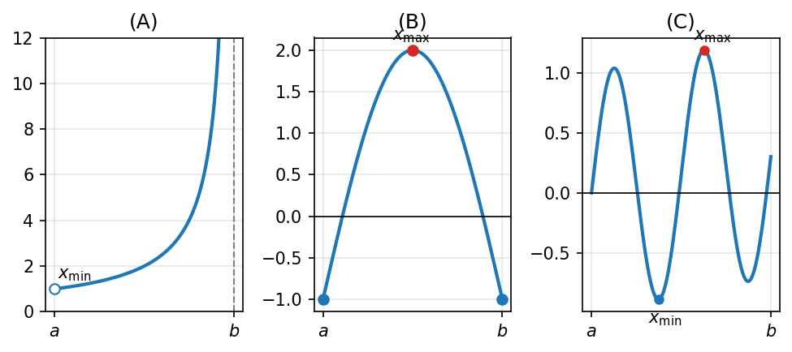
נקודות אי-רציפות: סליקה, קפיצה ועיקרית
תוכן בהכנה — להשלמה.